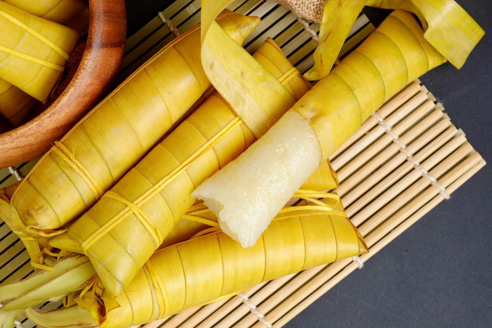

Halo-Halo

Ingredients
- Shaved ice
- Evaporated milk
- Sweetened fruits (jackfruit, banana, etc.)
- Sweetened beans (red mung, white beans)
- Nata de coco (coconut gel)
- Kaong (sugar palm fruit)
- Sago (tapioca pearls)
- Leche flan (caramel custard)
- Ube halaya (purple yam jam)
- Ube or vanilla ice cream (optional)
- Pinipig (crisped rice)
- Sweetened condensed milk (optional)
Instructions
- Layer sweetened fruits, beans, nata de coco, kaong, and sago at the bottom of a tall glass.
- Add shaved ice on top.
- Pour evaporated milk over the ice.
- Add a scoop of ube halaya and leche flan on top.
- (Optional) Top with ice cream, pinipig, and drizzle with sweetened condensed milk.
- Mix and enjoy!
Leche Flan
Ingredients
- 10 egg yolks
- 1 can (14 oz) condensed milk
- 1 can (12 oz) evaporated milk
- 1 teaspoon vanilla extract
- 1 cup sugar (for caramel)
Instructions
- Caramelize sugar: Heat sugar in a pan until it melts and turns golden brown. Pour into flan molds, then set aside.
- Make the custard: In a bowl, mix egg yolks, condensed milk, evaporated milk, and vanilla. Stir gently until smooth (avoid bubbles).
- Assemble: Pour the custard mixture over the caramel in the molds.
- Steam or bake: Cover the molds with foil and steam for 30-35 minutes or bake in a water bath at 350°F (175°C) for 45 minutes.
- Cool and serve: Let it cool, then chill in the fridge. To serve, invert the mold onto a plate.
Ube Halaya
Ingredients
- 1 lb (450g) ube (purple yam), boiled and mashed
- 1 can (14 oz) condensed milk
- 1 can (12 oz) evaporated milk
- 1/2 cup butter or margarine
- 1/2 cup sugar (optional, for extra sweetness)
- 1 teaspoon ube flavoring (optional)
Instructions
- Cook ube: In a pan, melt butter over low heat, then add mashed ube.
- Mix in milk: Stir in condensed milk, evaporated milk, and sugar (if using). Add ube flavoring for a more intense color and taste.
- Simmer: Cook over low heat, stirring constantly, until the mixture thickens and becomes smooth (about 30-40 minutes).
- Cool and serve: Once thick, transfer to a greased container, let cool, and chill. Serve or use as a dessert topping.
Bibingka
Ingredients
- 1 cup rice flour
- 1/4 cup all-purpose flour
- 1/2 cup sugar
- 1 cup coconut milk
- 1/2 cup water
- 2 eggs
- 1 tablespoon baking powder
- Banana leaves (optional)
- Salted egg (sliced) and cheese (topping)
Instructions
- Prepare batter: Mix rice flour, all-purpose flour, sugar, and baking powder in a bowl. In another bowl, whisk coconut milk, water, and eggs, then combine with the dry ingredients.
- Prepare pan: Line a baking pan with banana leaves (optional), lightly greased.
- Pour batter: Pour the batter into the prepared pan.
- Add toppings: Top with sliced salted egg and cheese.
- Bake: Bake at 350°F (175°C) for 25-30 minutes, or until golden brown and a toothpick comes out clean.
- Serve: Serve warm with more grated coconut, butter, or sugar if desired.
Turon

Ingredients
- 6 saba bananas (or plantains), sliced lengthwise
- 1 cup ripe jackfruit (sliced)
- 1/2 cup brown sugar
- Spring roll wrappers
- Oil (for frying)
Instructions
- Coat bananas: Roll banana slices in brown sugar until well-coated.
- Assemble: Place a banana slice and a few jackfruit strips on a spring roll wrapper, then roll tightly and seal with water.
- Fry: Heat oil in a pan and fry the rolls until golden brown and crispy.
- Serve: Drain excess oil and serve warm.
Maja Blanca

Ingredients
- 4 cups coconut milk
- 1 can (14 oz) condensed milk
- 1/2 cup cornstarch
- 3/4 cup sugar
- 1/2 cup corn kernels (optional)
- Latik (fried coconut curds) for topping (optional)
Instructions
- Mix ingredients: In a pot, combine coconut milk, condensed milk, sugar, and cornstarch. Stir until smooth.
- Cook: Heat the mixture over medium heat, stirring constantly until thickened (about 10-15 minutes). Add corn kernels if using.
- Set: Pour the thickened mixture into a greased mold or dish. Let it cool and set.
- Top and serve: Top with latik if desired, slice, and serve.
Puto Bumbong
Ingredients
- 2 cups purple glutinous rice (pirurutong), soaked overnight
- Banana leaves (for lining)
- Grated coconut (for topping)
- Butter or margarine (for topping)
- Brown sugar (for topping)
Instructions
- Grind soaked rice: Drain and grind the soaked glutinous rice to form a thick dough.
- Steam: Wrap portions of the rice dough in banana leaves or stuff into bamboo tubes (if available), then steam for 10-15 minutes until cooked.
- Serve: Brush with butter or margarine, then top with grated coconut and brown sugar. Serve hot.
Buko Pandan
Ingredients
- 2 cups young coconut (buko), shredded
- 1 pack (0.7 oz) pandan-flavored gelatin mix
- 1 can (14 oz) condensed milk
- 1 cup all-purpose cream
- 1/2 cup nata de coco (optional)
- 1/2 cup sago (optional)
Instructions
- Prepare gelatin: Cook pandan-flavored gelatin according to package instructions. Let it set, then cut into cubes.
- Mix ingredients: In a bowl, combine gelatin cubes, shredded buko, nata de coco, and sago.
- Add cream and milk: Stir in condensed milk and all-purpose cream until well combined.
- Chill and serve: Refrigerate for at least 1 hour before serving cold.
Cassava Cake

Ingredients
- 2 cups grated cassava (fresh or frozen, thawed)
- 1 can (14 oz) coconut milk
- 1 can (12 oz) evaporated milk
- 1 cup sugar
- 2 eggs
- 1/2 cup butter, melted
- 1 teaspoon vanilla extract
- 1/2 teaspoon baking powder
- Optional: additional coconut for topping
Instructions
- Preheat oven: Preheat your oven to 350°F (175°C) and grease a baking dish.
- Mix ingredients: In a bowl, combine grated cassava, coconut milk, evaporated milk, sugar, eggs, melted butter, vanilla, and baking powder. Mix well.
- Bake: Pour the mixture into the greased baking dish and bake for 45-60 minutes, or until set and the top is lightly golden.
- Cool and serve: Allow to cool, then slice and serve. Optionally, top with additional coconut before serving.
Suman

Ingredients
- 2 cups glutinous rice
- 1 cup coconut milk
- 1/2 cup water
- 1/2 cup sugar (adjust to taste)
- Banana leaves (for wrapping)
- Salt (optional, for flavor)
Instructions
- Prepare rice: Rinse the glutinous rice until the water runs clear. Soak for at least 2 hours, then drain.
- Mix ingredients: In a bowl, combine soaked rice, coconut milk, water, sugar, and a pinch of salt (if using). Mix well.
- Wrap in leaves: Cut banana leaves into squares. Place a portion of the rice mixture in the center, fold, and wrap tightly. Secure with twine or toothpicks.
- Steam: Place the wrapped suman in a steamer and steam for about 30-45 minutes, or until cooked through.
- Serve: Allow to cool slightly before unwrapping. Serve with sugar or coconut jam if desired.